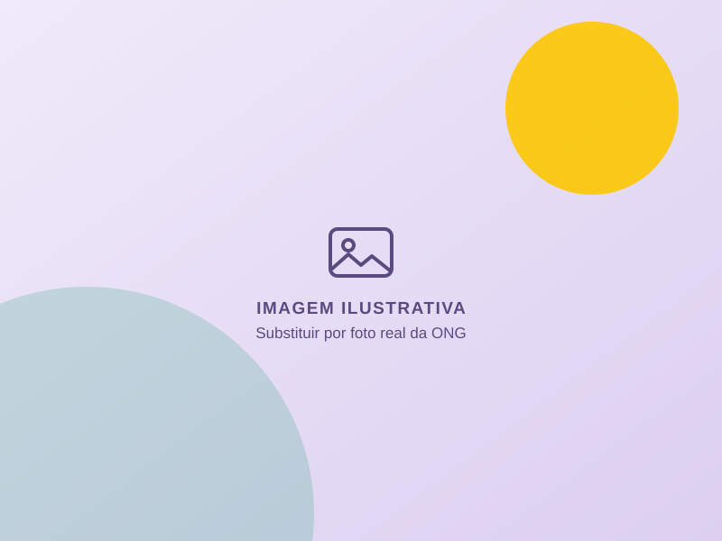

Corpo docente
[TEXTO OFICIAL]
Conhecer
Pré-Vestibular Social ONG Crias
[TEXTO OFICIAL DA ONG: APRESENTAÇÃO DO PROJETO PARA QUEM QUER ENTRAR NA UNIVERSIDADE]
[MODALIDADE E LOCAL DAS AULAS]
[DESCRIÇÃO DAS AULAS]
[DESCRIÇÃO DOS SIMULADOS E PALESTRAS]
[DESCRIÇÃO DA CONVIVÊNCIA E DOS PASSEIOS]
[TEXTO OFICIAL: COMO FUNCIONA O PROCESSO DE INSCRIÇÃO]
Quero ser aluno Abre o Google Forms em nova aba Quero ser voluntário Abre o Google Forms em nova abaSobre o projeto
[TEXTO OFICIAL DA ONG: CARÁTER SOCIAL DO PROJETO, PÚBLICO ATENDIDO E COMPROMISSO COM A COMUNIDADE]
O que fazemos
Aulas, palestras, simulados, momentos de convivência e passeios.
[ATIVIDADES — cadastradas em data/atividades.js]
Histórias
Histórias de quem já passou pelo projeto.
[DEPOIMENTOS REAIS E AUTORIZADOS — cadastrados em data/depoimentos.js]
Quem faz acontecer
Coordenação, professores e equipe de apoio.
[EQUIPE — cadastrada em data/equipe.js]
Como aprendemos
[TEXTO OFICIAL]
Conhecer[TEXTO OFICIAL]
Conhecer[TEXTO OFICIAL]
ConhecerFique por dentro
Acompanhe as novidades do projeto.
[NOTÍCIAS REAIS — cadastradas em data/noticias.js]
Explore
Acesse rapidamente as principais áreas do site.
Conheça professores e equipe de apoio.
AcessarVeja aulas, passeios e momentos do projeto.
AcessarAcompanhe as novidades do projeto.
AcessarFale com a coordenação do projeto.
AcessarParticipe
Escolha como participar do Pré-Vestibular Social ONG Crias.